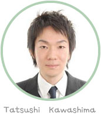

経歴
1981年2月26日生まれ 32歳
- 目白大学大学院心理学研究科 現代心理学専攻
- 日本大学経済学部産業経営学科卒業
- 社会心理学会会員
専門分野
- 対人コミュニケーション
- 社会心理学
- 言語コミュニケーション
- アサーティブコミュニケーション 他


経歴
1981年2月26日生まれ 32歳
専門分野
「あがりを直したい」
「会議で堂々と話せるようになりたい」
「聞き上手になりたい。」
コミュニケーションに関する悩みは人それぞれです。
私自身も10代の後半から20代の前半まで、過度のコンプレッスにより
人間関係で深く悩む時期がありました。
この時期は世界が暗く、これから自分はどうなってしまうのかと
不安な毎日を過ごしていました。
ある時は布団から起き上がることができなくなる日もありました。
自分が心底憎く、能力の無さを呪っていました。人とまともに話すことができない。
目を見て話すことができない。言葉がうまく出てこない。
人と話すことが苦痛で仕方がありませんでした。
だけど、だけど、「人と話したい」と願う自分がいました。
人間関係に対する強い悩みを持ち出してから、コミュニケーションに対する謎解きが始まりました。
自分の殻に閉じこもる中で、社会心理学、発達心理学、人間関係論等、
コミュニケーションに関わる学習を続けてきました。
長い月日を自分の心の問題を解決することに費やしました。
そして、なんとか精神的に回復し、社会に出ることになりました。
社会に出てからも人間関係に対する興味は尽きませんでした。
会社と言う組織の中で人間は、どうすれば創造的に仕事ができるようになるのか。
活々とした職場はどのように形成されていくのか。
どうすれば効率の良い会議ができるのか。
組織に根付くコミュニケーションに関する問題の研究を重ねていきました。
そうした日々を過ごしていくうちに、
「コミュニケーションで悩んでいる人や会社の役に立ちたい」
いう純粋な心が芽生えていることに気が付きました。
死ぬほど悩んだコミュニケーションと言う分野で今度は私自身が
社会に何か提供できないかと考えることが多くなったのです。
たくさんの時間を悩んだ末に、それが運命であり宿命であると確信し、
生涯を通して人と人とのコミュニケーションを研究することを決心しました。
個人と個人のかかわりから、組織におけるコミュニケーションまで、
ダイレクトコミュニケーションの研究分野は多岐にわたります。
そして、その研究の成果は、個人様であればコミュニケーション講座に、
法人様であれば研修で体験することができます。
新しい自分と出会い、成功する大きな可能性を秘めた講座です。
私の授業は笑いと感動をモットーにしています。皆さんと出会えることを心から楽しみにしています。
そしてなにより講座を受けてよかったと感じていただけるよう、精一杯努力いたします
ダイレクトコミュニケーションは対人コミュニケーションに関して、
世界一の会社を目指します。具体的には以下のようなことを成し遂げます。
1981年2月26日生まれ
＊社会人向けコミュニケーション講座の効果研究
＊コミュニケーション講座が及ぼす孤独感、
メンタルへルス、主張性、攻撃性分析
2012年現在、学生・社会人向けのコミュニケーション講座や企業研修はたくさんありますが、
その中でも科学的な統計に基づいた研修を行っている企業はごく一部です。
すなわち「信じるものは救われる」の精神でワークを行っているわけです。そして論拠は希薄でも、
過大広告で高額な料金を請求し、お金だけ取られると言う悲惨な自体が横行しています。
ダイレクトコミュニケーションのコミュニケーション講座は心理統計的に効果が実証されている
ワークをベースに講座を創ることを前提としています。
そうした科学的な思考を大事にすることで、社会的に根付く1つの機関として社会貢献をしていきたいと
考えています。
コミュニケーション講座（銀座、新宿、横浜にて）年間90～100回講義
企業研修、個人コーチング
・2012年
「嫌われる覚悟」 マイナビ出版 新書
浦安市美浜公民館
コミュニケーション力up研修
・2011年
TBS ニュースニュースバード
自殺特集 取材協力
・2010年
月間 人事マネジメント
社内コミュニケーション活性化法
・2008年
発売中 「人が怖い」マイナビ出版（新書）
株式会社ジェイックキャリアサポート
埼玉玉労働局ハローワーク
雇用保険受給者再就職支援
教材作成協力
社団法人日本理容美容教育センター
教材作成協力
・2007年
講演 3月1日
野田市教育委員会
「ココロのエステ～コンプレックスと向き合う～」
講演活動
取材 12月25日
技術にこだわるすべての人の転職情報誌
『エンジニアtype』（株式会社キャリアデザインセンター）
取材 2月号掲載
・2006年
ビジネスリーダーの情報武装マガジン
『先見経済』（株式会社清話会）11月1日号
「真に鍛えるべきは情報の生成能力である」原稿掲載
長崎結婚情報誌
『シンパシー通信』12月10日号より
「恋愛心理学」毎月連載中